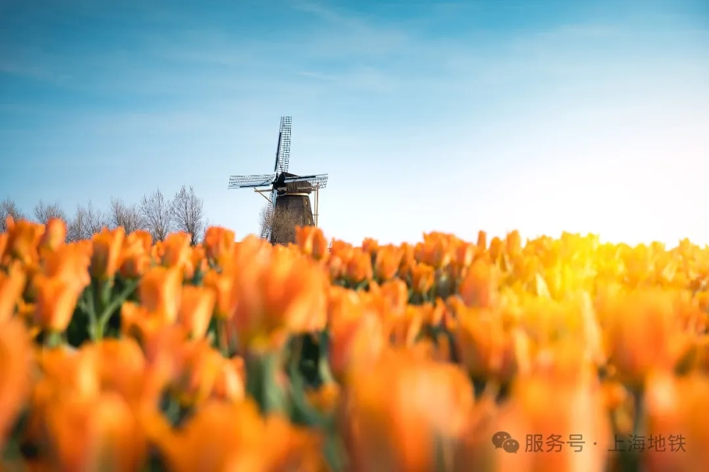
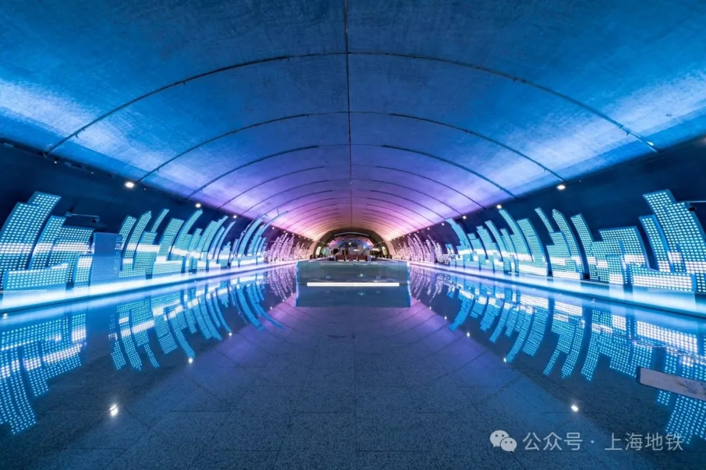

在所需要的实现slideshow的网页首先引入js和css文件 slide切换动画需要animate.css，https://animate.style/
样例代码：
引用js和样式
<link rel="stylesheet"
href="https://cdnjs.cloudflare.com/ajax/libs/animate.css/4.1.1/animate.min.css" />
<link rel="stylesheet" href="ditslideshow.css" />
<script type="text/javascript" src="ditslideshow.js"></script>
实例化javascript代码
var dss = new ditSlideShow({'tipbar_top':'35%','subtitle_fontsize' : '12pt','subtitle_top':'20%','dotsize':'8px','interval':3000,'arrow_size':'2em','animation':'fade'});
dss.bind(".mainslideshow");
dss.show();
代码说明：
参数是slideshow的配置
var config = {'tipbar_top':'35%','subtitle_fontsize' : '12pt','subtitle_top':'20%','dotsize':'8px','interval':3000,'arrow_size':'2em','animation':'fade'};